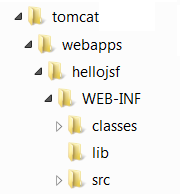

Introduction
JavaServer Faces (JSF) enables building of user interfaces for Java-based web applications from the server-side programs. JSF supports:
- Standard user interface components like input fields, buttons, and links.
- Navigation between pages.
- User input validation, error handling and event handing.
- Javabean management.
- Internationalization support.
JSF is an application framework, which helps you in designing and structuring your web applications. Other Java web application frameworks includes Apache Struts, Spring, Hibernate, Apache Tapestry, Apache Wicket, and many others. An application framework helps you to improve your productivity and efficiency, by providing clear processes and pre-defined components, enforcing MVC (Model-View-Controller) architecture and good programming practices. Framework, such as JSF and struts, are not easy to use. You need to spend a considerable amount of initial effort to learn (it is equivalent to learning another language). However, once you master a framework, you could develop better applications in faster time. However, there are many frameworks available. Choosing one could be an issue. [Beside Java web application framework, PHP's frameworks include Yii, CodeIgniter, CakePHP, Zend, Symfony, and etc. Ruby has Ruby on Rails.]
JSF has these versions:
- Java EE 5 (2006) (Java Servlet 2.5, JSP 2.1, JSTL 1.2, JSF 1.2, EJB 3.0, JDBC 3.0)
- Java EE 6 (2009) (Java Servlet 3.0, JSP 2.2/EL 2.2, JSTL 1.2, JSF 2.0, EJB 3.1, JDBC 4.0)
- JSF 2.1: Bundled in GlassFish 3.1
The JSF Home Page is @ http://www.oracle.com/technetwork/java/javaee/javaserverfaces-139869.html. For developers, check out the JSF Developer Site (under Project Mojarra of GlassFish) @ http://javaserverfaces.java.net.
Develop and Deploy JSF Applications on Apache Tomcat
Before writing our first JSF program, I shall assume that you have installed and configured Tomcat server. I shall also assume that Tomcat is running on port 8080 and denote the Tomcat's installed directory as $CATALINA_HOME. (Otherwise, read "How to install Tomcat".) I shall also assume that you are familiar with Java web applications, servlet and JavaServer Pages (JSP) technologies.
Example 1(a): Hello-world
Let us begin with a Hello-world example.
Step 1: Create a new Webapp for the JSF Hello-world
Let's define a new web context (web application) called "hellojsf" in Tomcat for our JSF Hello-world application. First of all, we need to create the standard directory structure for the web context (as shown in the figure below). Create a directory called "hellojsf", under the $CATALINA_HOME\webapps directory (where $CATALINA_HOME is the Tomcat's installed directory). Create a sub-directory "WEB-INF" under "hellojsf". Create sub-sub-directories: "classes", "lib" and "src" under "WEB-INF".
Keep the files in the appropriate directories:
- "
$CATALINA_HOME\webapps\hellojsf": This directory is known as context root, and keeps the "jsp", "html" and resources available to web users. - "
$CATALINA_HOME\webapps\hellojsf\WEB-INF": Keeps the webapp configuration files, such as "web.xml", "faces-config.xml". - "
$CATALINA_HOME\webapps\hellojsf\WEB-INF\src": Keeps the java program source files (optional). - "
$CATALINA_HOME\webapps\hellojsf\WEB-INF\classes": Keeps the java classes. - "
$CATALINA_HOME\webapps\hellojsf\WEB-INF\lib": keeps the "jar" files, which could be provided by external libraries.
(NetBeans)
- Create a new webapp project: File ⇒ New ⇒ Project ⇒ In "Categories": select "Java Web" ⇒ In "Projects": select "Web Application" ⇒ In "Project Name": enter "
hellojsf" ⇒ Choose the right "Server" ⇒ In "Context Path": enter "/hellojsf" ⇒ In "Frameworks", select "JavaServer Faces" ⇒ In "Libraries" tab, "Registered Libraries": select "JSF 2.1" ⇒ In "Configuration" tab, "JSF servlet URL Pattern": enter "/faces/*" ⇒ Finish. - A welcome file "
index.xhtml", which says hello, is automatically created. - Right-click on project "
hellojsf" ⇒ Deploy. - Issue URL
http://localhost:8080/hellojsf(which is redirected tohttp://localhost:8080/hellojsf/faces/index.xhtmlas configured inweb.xml). - Check "
WEB-INF\lib". The "jsf-api.jar" and "jsf-impl.jar" are the JSF libraries. The "jstl.jar" and "standard.jar" are the JSTL libraries. - Check out the configuration in "
hellojsf\WEB-INF\web.xml". The URL pattern "/faces/*" is mapped toFacesServlet. - Skip the following steps 2, 3, and 4, which has been done by NetBeans.
Step 2: Install JSF Runtime in Tomcat
- Download the JSF runtime @ http://javaserverfaces.java.net/download.html. Under "Stable Versions of Mojarra", "Current Release", select "2.x.x binary bundle ("
mojarra-x.x_xx-FCS-binary.zip"). - Unzip.
- Copy "
jsf-api.jar" and "jsf-impl.jar" from JSF'slibinto Tomcat'slib(i.e.,$CATALINA_HOME\lib), which will be available to all the web applications. Alternatively, you could copy them intohellojsfweb context'slib("$CATALINA_HOME\webapps\hellojsf\WEB-INF\lib"), which will be available to only thehellojsfweb application.
Step 3: Install JSTL (JSP Standard Tag Libraries) in Tomcat
- Download JSTL from http://jakarta.apache.org/taglibs/index.html. Select "Downloads" ⇒ "Standard 1.1 Taglibs" (or latest release) ⇒ "Binaries" ⇒ "
1.1.x.zip" ⇒ "jakarta-taglibs-standard-1.1.x.zip". - Unzip.
- Copy "
jstl.jar" and "standard.jar" from the downloaded Taglibs'libto Tomcat'slib, orhellojsfweb context'slib, like the above step. - [Alternatively, you could copy these two jar-files from Tomcat's "
webapps\examples\lib".]
Step 4: Configure "web.xml" for JSF Support
Write the following web configuration file "web.xml" and save it in $CATALINA_HOME\webapps\hellojsf\WEB-INF.
<?xml version='1.0' encoding='UTF-8'?>
<web-app version="2.5"
xmlns="http://java.sun.com/xml/ns/javaee"
xmlns:xsi="http://www.w3.org/2001/XMLSchema-instance"
xsi:schemaLocation="http://java.sun.com/xml/ns/javaee http://java.sun.com/xml/ns/javaee/web-app_2_5.xsd">
<!-- Faces Servlet -->
<servlet>
<servlet-name>Faces Servlet</servlet-name>
<servlet-class>javax.faces.webapp.FacesServlet</servlet-class>
<load-on-startup>1</load-on-startup>
</servlet>
<!-- Faces Servlet Mapping -->
<servlet-mapping>
<servlet-name>Faces Servlet</servlet-name>
<url-pattern>/faces/*</url-pattern>
</servlet-mapping>
</web-app>
The above configuration routes all URL requests "/faces/*" to the JSF's FacesServlet for processing.
Step 5: Write our Hello-world JSF Application
Write the following JSP file, and save it as "hello.jsp" under the context root ($CATALINA_HOME\webapps\hellojsf). Take note that this is a JSP page (just like any other regular JSP page), but uses JSF custom taglibs.
(NetBeans) Right-click on project "hellojsf" ⇒ New ⇒ Other ⇒ In "Categories": select "Web" ⇒ In "File Type": select "JSF Page" ⇒ In "File Name": enter "hello" ⇒ In "Options": select "JSP File (Standard Syntax)" ⇒ "Finish".
1 2 3 4 5 6 7 8 9 10 11 12 13 14 15 16 |
<%@page contentType="text/html" pageEncoding="UTF-8"%>
<%@taglib prefix="f" uri="http://java.sun.com/jsf/core"%>
<%@taglib prefix="h" uri="http://java.sun.com/jsf/html"%>
<!DOCTYPE html>
<f:view>
<html>
<head>
<meta http-equiv="Content-Type" content="text/html; charset=UTF-8"/>
<title>Hello JSF in JSP Syntax</title>
</head>
<body>
<h1><h:outputText value="Hello World from JSF!"/></h1>
</body>
</html>
</f:view>
|
Explanation:
- Line 1 is a JSP page directive, declaring this file as a JSP page.
- Line 2 and 3 are JSP taglib directives declaring the JSF tags prefix and library. Two JSF taglibs are used:
core(with prefixf) andhtml(with prefixh). - A HTML output text (
h:outputText) is defined within a JSF view (f:view).
Step 6: Start Tomcat
Start the Tomcat server. Check for the following messages to confirm that web context "hellojsf" has been started. Also take note of the JSF (Mojarra) version number.
...... INFO: Deploying web application directory hellojsf Apr 29, 2010 10:54:02 PM com.sun.faces.config.ConfigureListener contextInitialized INFO: Initializing Mojarra 2.1.1 (FCS 20110408) for context '/hellojsf' ......
Step 7: Run the JSF Application
Issue the following URL to trigger the JSF app. The URL "/faces/hello.jsp" is mapped to JSF's FacesServlet, as configured in web.xml.
http://localhost:8080/hellojsf/faces/hello.jsp
You shall see the output text "Hello, world!" created by JSF tag <h:outputText>. (JSF is primarily meant for creating UI such as texts, input box, etc.) Do a "View Source" to check the HTML output produced by the JSF.
Example 1(b): Hello-world in Facelets (JSF 2.0)
Instead of writing JSF in JSP syntax (as in the earlier example), you could also write your JSF in facelets, which is XML-compliance (since JSF 2.0). Write the following JSF codes, and save it as "hello.xhtml" under the context root ($CATALINA_HOME\webapps\hellojsf). Take note that the file extension for facelet is ".xhtml" instead of ".jsp".
(NetBeans) Right-click on project "hellojsf" ⇒ New ⇒ Other ⇒ In "Categories": select "Web" ⇒ In "File Type": select "JSF Page" ⇒ In "File Name": enter "hello" ⇒ In "Options": select "Facelets" ⇒ "Finish".
1 2 3 4 5 6 7 8 9 10 11 12 |
<?xml version='1.0' encoding='UTF-8' ?>
<!DOCTYPE html>
<html xmlns="http://www.w3.org/1999/xhtml"
xmlns:h="http://java.sun.com/jsf/html">
<h:head>
<meta http-equiv="Content-Type" content="text/html; charset=UTF-8"/>
<title>Hello JSF in Facelet Format</title>
</h:head>
<h:body>
<h1>Hello from Facelets</h1>
</h:body>
</html>
|
Explanation:
- Line 1 declares that this document is a XML document.
- Line 4 declares the namespace for JSF
htmltaglib with prefixh. - We use JSF custom tags
<h:head>and<h:body>to replace the HTML<head>and<body>.
To run this JSF, issue URL http://localhost:8080/hellojsf/faces/hello.xhtml. Use "View Source" to check the output generated.
Example 2(a): User Input, Navigation and Javabean (JSF in JSP syntax)
This example involves two pages for illustrating JSF navigation, and a Javabean.
"input.jsp"
Let us write the UI for user input called "input.jsp" to produce the following form:
1 2 3 4 5 6 7 8 9 10 11 12 13 14 15 16 17 18 19 20 21 |
<%@page contentType="text/html" pageEncoding="UTF-8"%>
<%@taglib prefix="f" uri="http://java.sun.com/jsf/core"%>
<%@taglib prefix="h" uri="http://java.sun.com/jsf/html"%>
<!DOCTYPE html>
<html>
<head>
<meta http-equiv="Content-Type" content="text/html; charset=UTF-8"/>
<title>User Input Form (JSF in JSP syntax)</title>
</head>
<body>
<f:view>
<h1><h:outputText value="User Input Form"/></h1>
<h:form id="UserEntryForm">
<h:outputText value="Enter Your Name:"/>
<h:inputText value="#{userBean.name}" />
<h:commandButton action="send" value="OK" />
</h:form>
</f:view>
</body>
</html>
|
Explanation
- An HTML form (with output text, input text and button) is defined inside a JSF view.
- The user's input will be saved in a Javabean's field called
name. The Javabean is referred to asuserBean. The EL request-time evaluator#{...}(instead of compile-time evaluator${...}) is used.
"response.jsp"
The second page called "response.jsp" is as follows:
1 2 3 4 5 6 7 8 9 10 11 12 13 14 15 16 |
<%@page contentType="text/html" pageEncoding="UTF-8"%>
<%@taglib prefix="f" uri="http://java.sun.com/jsf/core"%>
<%@taglib prefix="h" uri="http://java.sun.com/jsf/html"%>
<!DOCTYPE html>
<html>
<head>
<meta http-equiv="Content-Type" content="text/html; charset=UTF-8"/>
<title>Response (JSF in JSP syntax)</title>
</head>
<body>
<f:view>
<h2>Hello, <h:outputText value="#{userBean.name}" />!</h2>
</f:view>
</body>
</html>
|
Explanation:
- A HTML
outputText, which retrieves its value from a JavaBean (calleduserBean)'s fieldname, is defined within a JSF view.
JavaBean "mypkg.MyUserBean" as "userBean"
These two JSP pages refer to a Javabean (called userBean)'s field (called name), which is implemented in a class called MyUserBean.java in package mypkg as follows.
(NetBeans) Right-click on the project "hellojsf" ⇒ New ⇒ Others ⇒ In "Categories": select "JavaServer Faces" ⇒ In "File Types": select "JSF Managed Bean" ⇒ In "Class Name": enter "MyUserBean" ⇒ In "Package": enter "mypkg" ⇒ Check "Add data to configuration file" ⇒ In "Name": enter "userBean" ⇒ In "Scope": select "request" ⇒ Finish.
1 2 3 4 5 6 7 8 9 10 11 12 13 14 15 16 17 18 |
// Saved as "hellojsf\WEB-INF\src\mypkg\MyUserBean.java" // To compile using JDK: // > cd to "hellojsf\WEB-INF" // > javac src\mypkg\MyUeseBean.java -d classes // Output in "hellojsf\WEB-INF\classes\mypkg\MyUserBean.class" package mypkg; public class MyUserBean { private String name; // default constructor public MyUserBean() { } // Getter public String getName() { return name; } // Setter public void setName(String name) { this.name = name; } } |
Explanation
- A Javabean is a special Java class, which follows a certain set of rules. For instance, it has a no-arg constructor; if the class has a
privateinstance variable calledxxx, there shall be apublicgetter calledgetXxx()and apublicsetter calledsetXxx(). The rationale of having this rule is if we findpublicmethodsgetXxx()andsetXxx(), we can infer that there is aprivatevariable calledxxx, even thoughtprivateentities are not exposed to the user. - The above Javabean simply define a private instance variable called
name, and its public getter and setter. JSP pages references theprivatevariablename(via the public getter and setter). - The purpose of this bean is to capture and save the user's input after the user clicks the submit button, and return this value to the response page. This bean provides a bridge between the JSP pages and the application logic (i.e., Model in the Model-View-Control (MVC) design pattern).
Configuring "faces-config.xml"
To define the navigation rule and manage the Javabean, a configuration file called "faces-config.xml" needs to be created and save in "$CATALINA_HOME\hellojsf\WEB-INF".
(NetBeans) Right-click on the project "hellojsf" ⇒ New ⇒ Others ⇒ In "Categories": select "JavaServer Faces" ⇒ In "File Types": select "JSF Faces Configuration" ⇒ In "Face Name": use the default "faces-config.xml" ⇒ In "Folder": leave it empty to use the default directory "WEB-INF" ⇒ Finish.
1 2 3 4 5 6 7 8 9 10 11 12 13 14 15 16 17 18 19 20 |
<?xml version='1.0' encoding='UTF-8'?>
<faces-config version="2.0"
xmlns="http://java.sun.com/xml/ns/javaee"
xmlns:xsi="http://www.w3.org/2001/XMLSchema-instance"
xsi:schemaLocation="http://java.sun.com/xml/ns/javaee http://java.sun.com/xml/ns/javaee/web-facesconfig_2_0.xsd">
<navigation-rule>
<from-view-id>/input.jsp</from-view-id>
<navigation-case>
<from-outcome>send</from-outcome>
<to-view-id>/response.jsp</to-view-id>
<redirect />
</navigation-case>
</navigation-rule>
<managed-bean>
<managed-bean-name>userBean</managed-bean-name>
<managed-bean-class>mypkg.MyUserBean</managed-bean-class>
<managed-bean-scope>session</managed-bean-scope>
</managed-bean>
</faces-config>
|
Explanation
- The navigation rule states that: from the view (page) "
/input.jsp", if the outcome of the executinginput.jspis "send", then go to "/response.jsp" view (page). The<redirect />send a redirect response to the client and causes the browser to request for a new page, instead of remaining in the current page. - A managed bean called
userBean(this name is used by the JSP pages) is defined. It is implemented in classMyUserBeanin packagemypkg. The bean hassessionscope, and is available to all the requests under the current client session.
Run the JSF Application
Start Tomcat, and issue this URL:
http://localhost:8080/hellojsf/faces/input.jsp
Use "View Source" to study the HTML code generated by the JSF.
Input "someone" into the text box, and click OK. The output shows "Hello, someone!" as programmed in the "response.jsp" page.
Example 2(b): User Input, Navigation and Javabean (JSF in Facelets) (JSF 2.0)
Let's rewrite the above example using facelets (instead of JSP syntax) and do it under JSF 2.0
"inputFacelet.xhtml"
Let us write the UI for user input called "input.xhtml" (saved in the context root $CATALINA_HOME\webapps\hellojsf) to produce the following input form. We also included an image.
1 2 3 4 5 6 7 8 9 10 11 12 13 14 15 16 17 |
<?xml version='1.0' encoding='UTF-8' ?>
<!DOCTYPE html>
<html xmlns="http://www.w3.org/1999/xhtml"
xmlns:h="http://java.sun.com/jsf/html">
<h:head>
<meta http-equiv="Content-Type" content="text/html; charset=UTF-8"/>
<title>Input Form (in Facelet)</title>
</h:head>
<h:body>
<h2>User Input Form</h2>
<h:form id="UserEntryForm">
Enter Your Name: <h:inputText id="username" value="#{userBean.name}" />
<h:commandButton id="submit" action="responseFacelet" value="OK" />
</h:form>
<h:graphicImage id="image" url="#{resource['glassfish.gif']}" />
</h:body>
</html>
|
Explanation:
- The
<h:inputText>tag defines an input text field. Thevalueattribute specifies the storage location of the user input. The#{userBean.name}refers to the fieldnameof a Javabean instance calleduserBean. We shall configure this JavaBean later. - The
<h:commandButton>tag defines a submit button. Theactionattribute specifies the processing page of this form, i.e., "responseFacelet". - The
<h:graphicImage>tag defines an image. The#{resource['glassfish.gif']}refer to the file "glassfish.gif". By default, the resources are kept in directory "resources" (with a's'here).
"responseFacelet.xhtml"
The processing page "responseFacelet.xhtml" is as follows:
1 2 3 4 5 6 7 8 9 10 11 12 13 14 15 16 |
<?xml version='1.0' encoding='UTF-8' ?>
<!DOCTYPE html>
<html xmlns="http://www.w3.org/1999/xhtml"
xmlns:h="http://java.sun.com/jsf/html">
<h:head>
<meta http-equiv="Content-Type" content="text/html; charset=UTF-8"/>
<title>Response Page (in Facelet)</title>
</h:head>
<h:body>
<h:form id="responseform">
<h2>Hello, #{userBean.name}
<h:commandButton id="back" action="inputFacelet" value="Back" /></h2>
</h:form>
<h:graphicImage id="image" url="#{resource['glassfish.gif']}" />
</h:body>
</html>
|
Explanation:
- The
<h:commandButton>directs to "inputFacelet.xhtml", upon submission of this form.
Javabean "MyUserBeanFacelet.java" as "userBean"
These two pages use a Javabean called UserBean with a field called name, which is implemented in a class called "MyUserBeanFacelet.java", as follows:
1 2 3 4 5 6 7 8 9 10 11 12 13 14 15 16 17 18 |
package mypkg;
import javax.faces.bean.ManagedBean;
import javax.faces.bean.RequestScoped;
@ManagedBean(name="userBean")
@RequestScoped
public class MyUserBeanFacelet {
private String name;
// Default constructor
public MyUserBeanFacelet() { }
// Getter
public String getName() { return name; }
// Setter
public void setName(String name) { this.name = name; }
}
|
Explanation:
- Instead of configuring the JavaBean in the "
faces-config.xml", we use the annotation@ManagedBeanand@RequestScoped(JSF 2.0) to configure the bean. In@ManageBeanannotation, we set the deployment name to "userBean", which can then be used by the JSF. By default,MyUserBeanFaceletwill be deployed asmyUserBeanFacelet, with the first letter converted to lowercase.
Configuring "faces-config.xml"
There is no need to do any configuration for this example (under JSF 2.0). You may need to provide an empty skeleton (save as "faces-config.xml" in "$CATALINA_HOME\hellojsf\WEB-INF").
<?xml version="1.0" encoding='UTF-8'?>
<faces-config xmlns="http://java.sun.com/xml/ns/javaee"
xmlns:xsi="http://www.w3.org/2001/XMLSchema-instance"
xsi:schemaLocation="http://java.sun.com/xml/ns/javaee
http://java.sun.com/xml/ns/javaee/web-facesconfig_2_0.xsd"
version="2.0">
<!-- Empty for this sample.
Managed bean name automatically derived from bean class name.
Bean scope is request by default.
Results pages automatically derived from return value of action controller. -->
</faces-config>
Run the JSF Application
Start Tomcat, and issue this URL:
http://localhost:8080/hellojsf/faces/inputFacelet.xhtml
Use "View Source" to study the HTML code generated by the JSF.
JSF Basics
JSF Templates
JSF provides two custom taglibs: core and html, that needs to be declared. The html custom tags are used to generate HTML codes.
- For JSF in JSP syntax (
.jsp), the following JSP taglib directives are needed:<%@page contentType="text/html" pageEncoding="UTF-8"%> <%@taglib prefix="f" uri="http://java.sun.com/jsf/core"%> <%@taglib prefix="h" uri="http://java.sun.com/jsf/html"%> <!DOCTYPE html> <f:view> <html> <head> <meta http-equiv="Content-Type" content="text/html; charset=UTF-8"/> <title>....</title> </head> <body> ...... ...... </body> </html> </f:view> - For JSF in JSP XML Syntax (
.jspx):<?xml version="1.0" encoding="UTF-8"?> <jsp:root xmlns:jsp="http://java.sun.com/JSP/Page" xmlns:f="http://java.sun.com/jsf/core" xmlns:h="http://java.sun.com/jsf/html" version="2.1"> <jsp:directive.page language="java"contentType="text/html" pageEncoding="UTF-8"/> <html> <head> <meta http-equiv="Content-Type" content="text/html; charset=UTF-8"/> <title>....</title> </head> <body> ...... ...... </body> </html> </jsp:root> - For JSF in Facelet (
.xhtml), we use the xml namespace (xmlns) declarations:<?xml version='1.0' encoding='UTF-8' ?> <!DOCTYPE html> <html xmlns="http://www.w3.org/1999/xhtml" xmlns:f="http://java.sun.com/jsf/core" xmlns:h="http://java.sun.com/jsf/html"> <h:head> <meta http-equiv="Content-Type" content="text/html; charset=UTF-8"/> <title>....</title> </h:head> <h:body> ...... ...... </h:body> </html>
<f:view>, <h:outputText>
A JSF user interface is called a view. Hence, all the JSF tags must be enclosed in <f:view>....</f:view> tags.
In example 1(a), we have:
<f:view> ...... <h1><h:outputText value="Hello World from JSF!"/></h1> ...... </f:view>
The <h:outputText> custom action is used to render text specified in value attribute. Other optional attributes can be applied, e.g., style=CssStyle, styleClass=CssStyleClass, id=identifier, escape=true|false (convert special HTML character to escape sequence), and others. Check the JSF API.
<h:form>, <h:inputText>, <h:commandButton>
In Example 2(a), we have:
<f:view>
......
<h:form id="UserEntryForm">
<h:outputText value="Enter Your Name:"/>
<h:inputText value="#{userBean.name}" />
<h:commandButton action="send" value="OK" />
</h:form>
</f:view>
The <h:form>...</h:form> custom action produce a HTML <form>...</form>, as follows:
<form id="UserEntryForm" name="UserEntryForm" method="post" // <h:form> action="/hellojsf/faces/input.jsp;jsessionid=..." enctype="application/x-www-form-urlencoded"> <input type="hidden" name="UserEntryForm" value="UserEntryForm" /> Enter Your Name: // <h:outputText> <input type="text" name="UserEntryForm:j_id_jsp_1153749161_4" /> // <h:inputText> <input type="submit" name="UserEntryForm:j_id_jsp_1153749161_5" // <h:commandButton> value="OK" /> <input type="hidden" name="javax.faces.ViewState" id="javax.faces.ViewState" value="2513188408420307189:1425545453185206650" autocomplete="off" /> </form> // </h:form>
The <form> has default method of POST; default action of the current page (itself), with a session id attached via URL rewriting.
The <h:inputText> generate an input text field (<input type="text">). The <h:commandButton> produces a submit button (<input type="submit">)
<h:graphicImage>, <h:commandLink>
The <h:graphicImage> produces a HTML <img>, e.g.
<h:graphicImage url="/images/glassfish.gif" />
<h:graphicImage id="image" url="#{resource['glassfish.gif']}" />
The <h:commandLink> produces a HTML <a> tag that acts like a <form>'s submit button when clicked, e.g.,
<h:commandLink action="back" immediate="true" />
[TODO] more
Converter
[TODO]
Validator
[TODO]
REFERENCES & RESOURCES
- JSF (JavaServer Faces) Home Page @ http://www.oracle.com/technetwork/java/javaee/javaserverfaces-139869.html, and JSF Developer Site (Project Mojarra of GlassFish) @ http://javaserverfaces.java.net.
- JSF 1.2, 2.0, 2.1 Specifications.
- Apache Tomcat @ http://tomcat.apache.org.
- Java Servlets Home Page @ http://java.sun.com/products/servlet. Servlet Developers @ http://java.net/projects/servlet/.
- JSP (JavaServer Pages) Home Page @ http://www.oracle.com/technetwork/java/javaee/jsp/index.html, and JSP Developer Site @ http://jsp.java.net.
- JSTL (JSP Standard Tag Libraries) 1.2 developers @ http://jstl.java.net, and JSTL 1.1 Apache Jakarta's Taglibs @ http://jakarta.apache.org/taglibs/index.html.
- EL Developers @ http://uel.java.net.
- Glassfish developers @ http://glassfish.java.net.
- The Java EE 6 Tutorial, Chapter 4 JavaServer Faces Technology, December 2009 @ http://java.sun.com/javaee/6/docs/tutorial/doc/bnaph.html.
- The Java EE 5 Tutorial, Chapter 10 JavaServer Faces Technology, October 2008 @ http://download.oracle.com/javaee/5/tutorial/doc/bnaph.html.
- Java EE 6 Technologies @ http://www.oracle.com/technetwork/java/javaee/tech/index-jsp-142185.html.
- Java EE 5 Technologies @ http://www.oracle.com/technetwork/java/javaee/tech/javaee5-jsp-135162.html.
- java.net - The Source for Java Technology Collaboration @ http://www.java.net.